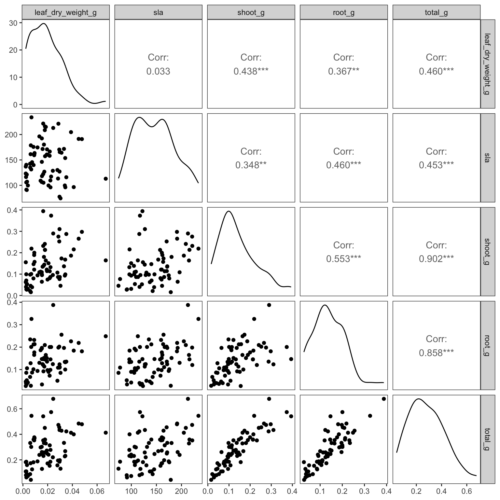
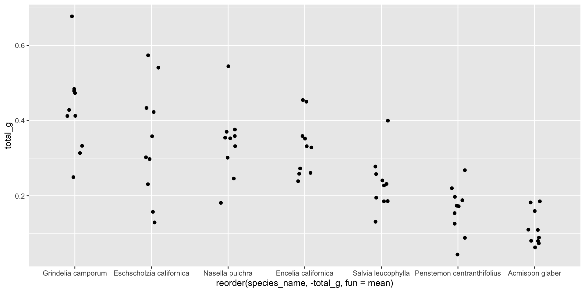
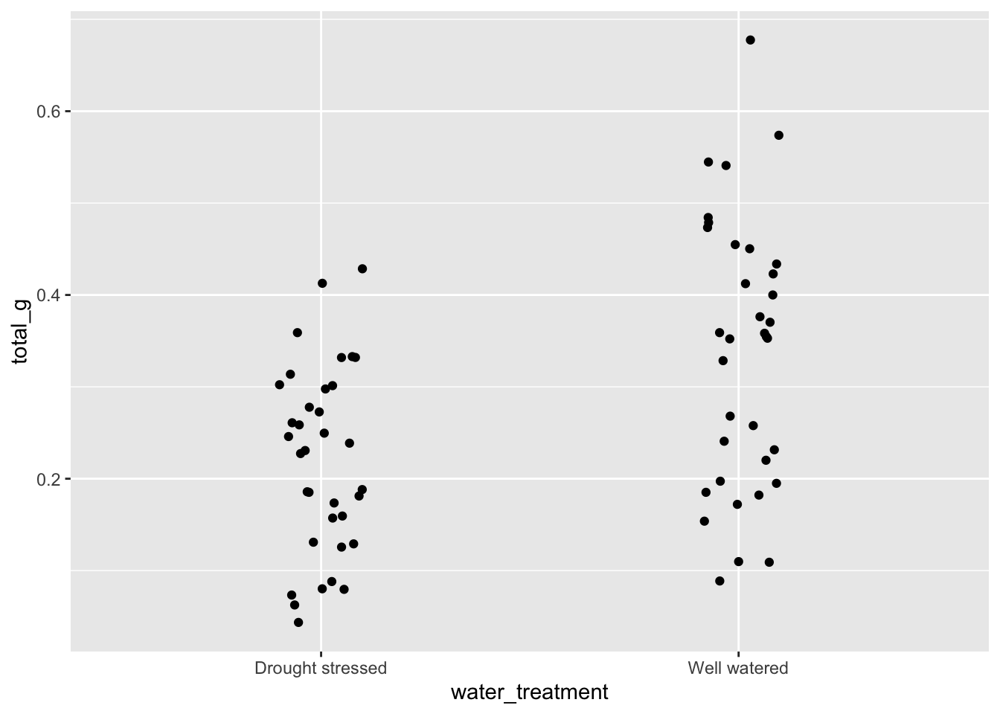
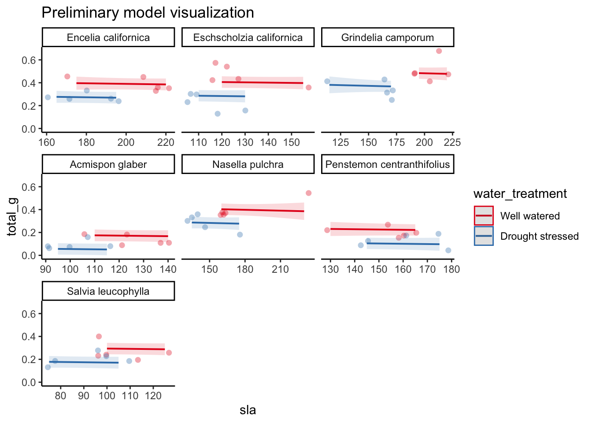
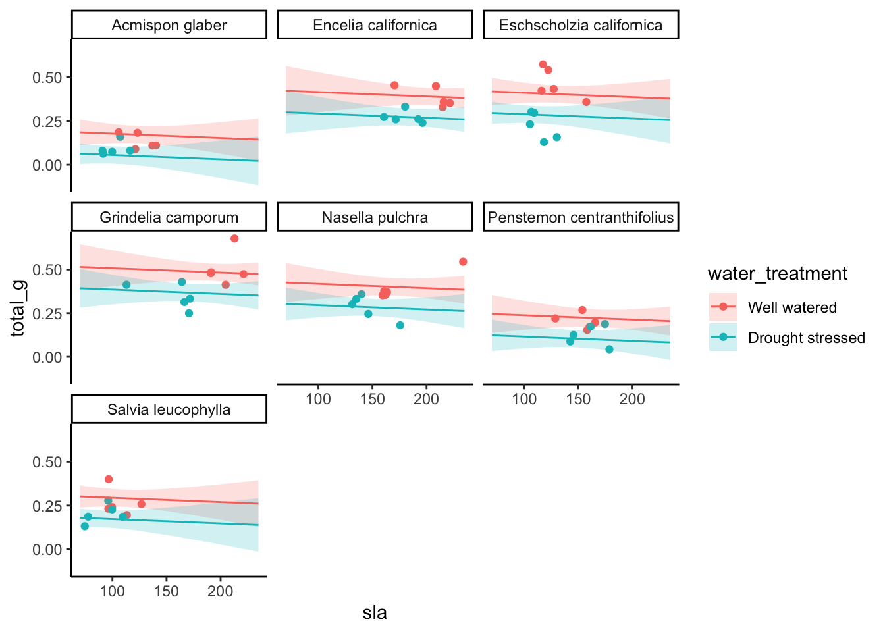

WARNING: this document provides the foundation for your homework 3, but you will need to create your own neat, organized document to render for your homework submission. Create a new document for your homework in the code folder of this repository.
You will not need all the information in this document to do your homework; IT IS YOUR JOB TO EDIT THE INFORMATION IN YOUR HOMEWORK DOCUMENT TO ONLY INCLUDE WHAT IS NECESSARY.
Relevant definitions:
specific leaf area (SLA, units: mm2/g): surface area of a leaf divided by its dry mass, represents life strategy (high SLA = large surface area and low mass = “fast” species)
root mass (units: g): mass of root tissue
shoot mass (units: g): mass of aboveground tissue
Set up
reading in packages
# general uselibrary(tidyverse)library(readxl)library(here)library(janitor)# visualizing pairslibrary(GGally)# model selectionlibrary(MuMIn)# model predictionslibrary(ggeffects)# model tableslibrary(gtsummary)library(flextable)library(modelsummary)drought_exp <-read_xlsx(path =here("data", "Valliere_etal_EcoApps_Data.xlsx"),sheet ="First Harvest")# quick look at data str(drought_exp)
# cleaningdrought_exp_clean <- drought_exp %>%clean_names() %>%# nicer column namesmutate(species_name =case_when( # adding column with species scientific names species =="ENCCAL"~"Encelia californica", # bush sunflower species =="ESCCAL"~"Eschscholzia californica", # California poppy species =="PENCEN"~"Penstemon centranthifolius", # Scarlet bugler species =="GRICAM"~"Grindelia camporum", # great valley gumweed species =="SALLEU"~"Salvia leucophylla", # Purple sage species =="STIPUL"~"Nasella pulchra", # Purple needlegrass species =="LOTSCO"~"Acmispon glaber"# deerweed )) %>%relocate(species_name, .after = species) %>%# moving species_name column after speciesmutate(water_treatment =case_when( # adding column with full treatment names water =="WW"~"Well watered", water =="DS"~"Drought stressed" )) %>%relocate(water_treatment, .after = water) # moving water_treatment column after water
Visualizing
correlations
ggpairs(drought_exp_clean, # data framecolumns =c("leaf_dry_weight_g", # columns to visualize"sla", "shoot_g", "root_g", "total_g"), upper =list(method ="pearson")) +# calculating Pearson correlation coefficienttheme_bw() +# cleaner themetheme(panel.grid =element_blank()) # getting rid of gridlines

Choose 3 pairs of variables to compare. Make notes of those comparisons below.
Leaf weight has a positive relationship with total biomass (Pearson’s r = 0.46).
SLA has a positive relationship with shoot mass (Pearson’s r = 0.35).
Shoot mass has a positive relationship with root mass (Pearson’s r = 0.55).
Preliminary visualizations
If you aren’t familiar with each plant species, google them!
Then go exploring! Visually.
In this scenario, we’re interested in how three variables affect total biomass: species (categorical), water treatment (categorical), specific leaf area (SLA, numeric).
Note: it is totally ok (and encouraged) to explore these separately!
how does total biomass differ between species?
ggplot(data = drought_exp_clean, # data frameaes(x =reorder(species_name, # reordering x-axis-total_g, # in reverse order of mean total massfun = mean), # calculating mean to reordery = total_g)) +# y-axisgeom_jitter(width =0.1, # narrow jitterheight =0) # not jittering points up and down

Grindelia has highest biomass, Lotus has lowest, seem to all be different
how does total biomass differ between water treatments?
ggplot(data = drought_exp_clean, # data frameaes(x = water_treatment, # x-axisy = total_g)) +# y-axisgeom_jitter(width =0.1, # narrow jitterheight =0) # not jittering points up and down

mass in well watered treatment is higher than in drought stressed treatment
how does specific leaf area (SLA) influence total biomass?
SLA seems to have a positive relationship with total mass - as SLA increases, total mass does too
Model construction
What is the null model?
total biomass is not predicted by any of these variables
What is the saturated model?
total biomass as a function of SLA, water treatment, and species
In class we are going to try two more models:
total biomass as a function of SLA and water treatment
total biomass as a function of SLA and species
For homework, you will construct one more model:
total biomass as a function of water treatment and species
You will then compare all 5 models to determine which best describes total biomass. For your homework, you will need to create a table summarizing the structure of these models.
0. Null model
model0 <-lm(total_g ~1, # formuladata = drought_exp_clean) # data frame
1. total biomass as a function of SLA, water treatment, and species
reference for water_treatment: drought stressed reference for species_name: Encelia californica
Interpret the model estimates for the:
intercept
SLA slope
well watered estimate
Lotus scoparius estimate
Stipe pulcra estimate
Intercept: Encelia californica mass when SLA = 0 in drought stressed treatment slope: across water treatment levels and species, for each 1 mm2/g increase in SLA, you would expect 0 increase in mass. Another way of stating this is: there is no effect of SLA on mass. well watered estimate: across species and SLA OR on average, plants in well watered treatment are 0.12 ± 0.019 g greater than plants in drought stressed treatment Lotus scoparius estimate: across water treatments and SLA OR on average, Lotus scoparius plants were -0.23 ± 0.032 g less than Encelia californica. Stipa pulchra estimate: across water treatments and SLA or on average, Stipa pulchra plants are the same size as Encelia californica plants.
Model predictions
Note: only plot terms in the model you select - if your doesn’t include one of these terms, take it out and adjust the plotting code accordingly!
model_preds <-ggpredict(model1, terms =c("sla","water_treatment", "species_name"))# use View(model_preds) to see the predictions as a data frame# use model_preds to see the predictions formatted nicely
Visualization
Note: this is the quick way to visualize model predictions. For your homework, you may find it easier to plot things yourself (i.e. not using the plot() functionality within ggeffects). See lecture for an example of how to do this.
# plot function within ggeffectsplot(model_preds, # model predictionslimit_range =TRUE, # limit the range of predictions to the range of predictor valuesshow_data =TRUE) +# show the underlying data# everything below this is ggplot() stufftheme_classic() +# classic themelabs(title ="Preliminary model visualization") +# plot titletheme(panel.grid =element_blank()) # getting rid of gridlines

The “more customizable” way:
# creating new data frame of model predictions for plottingmodel_preds_for_plotting <- model_preds %>%rename(sla = x, # renaming columns to make this easier to usewater_treatment = group,species_name = facet)# use View(model_preds_for_plotting) # to compare this to the original model_preds data frameggplot() +# underlying datageom_point(data = drought_exp_clean,aes(x = sla,y = total_g,color = water_treatment)) +# model prediction 95% CI ribbongeom_ribbon(data = model_preds_for_plotting,aes(x = sla, y = predicted,ymin = conf.low,ymax = conf.high,fill = water_treatment),alpha =0.2) +# model prediction linesgeom_line(data = model_preds_for_plotting,aes(x = sla, y = predicted,color = water_treatment)) +# cleaner themetheme_classic() +# creating different panels for speciesfacet_wrap(~species_name)

Making a table
# one option for a single modelflextable::as_flextable(model1)
F-statistic: 23.44 on 61 and 8 DF, p-value: 0.0000
# another option for a single modelgtsummary::tbl_regression(model1)
Characteristic
Beta
95% CI1
p-value
sla
0.00
0.00, 0.00
0.6
water_treatment
Drought stressed
—
—
Well watered
0.12
0.08, 0.16
<0.001
species_name
Acmispon glaber
—
—
Encelia californica
0.24
0.14, 0.34
<0.001
Eschscholzia californica
0.23
0.17, 0.30
<0.001
Grindelia camporum
0.33
0.24, 0.42
<0.001
Nasella pulchra
0.24
0.16, 0.32
<0.001
Penstemon centranthifolius
0.06
-0.02, 0.14
0.13
Salvia leucophylla
0.12
0.05, 0.18
<0.001
1 CI = Confidence Interval
# comparing modelsmodelsummary::modelsummary( # this function takes a list of modelslist( "null"= model0, # "model name" = model object"model 1"= model1,"model 2"= model2,"model 3"= model3 ))
tinytable_v14txmafkukick14wmw1
null
model 1
model 2
model 3
(Intercept)
0.279
0.080
0.047
-0.033
(0.017)
(0.056)
(0.054)
(0.067)
sla
0.000
0.001
0.001
(0.000)
(0.000)
(0.001)
water_treatmentWell watered
0.122
0.090
(0.020)
(0.029)
species_nameEncelia californica
0.238
0.115
(0.051)
(0.059)
species_nameEschscholzia californica
0.234
0.222
(0.033)
(0.041)
species_nameGrindelia camporum
0.330
0.226
(0.047)
(0.054)
species_nameNasella pulchra
0.241
0.168
(0.040)
(0.048)
species_namePenstemon centranthifolius
0.061
-0.006
(0.039)
(0.047)
species_nameSalvia leucophylla
0.117
0.139
(0.033)
(0.041)
Num.Obs.
70
70
70
70
R2
0.000
0.755
0.303
0.610
R2 Adj.
0.000
0.722
0.282
0.566
AIC
-75.2
-157.5
-96.4
-127.1
BIC
-70.7
-135.0
-87.4
-106.8
Log.Lik.
39.580
88.741
52.220
72.538
F
23.439
14.572
13.855
RMSE
0.14
0.07
0.11
0.09
Note 1: notice all the information at the bottom of the modelsummary output - if you only needed the AIC and delta AIC, what could you do? see package documentation for help
Note 2: you will always have to report the F-statistic, degrees of freedom, test statistic, p-value, ⍺, and R2. Whether or not this information is in a table is up to you.